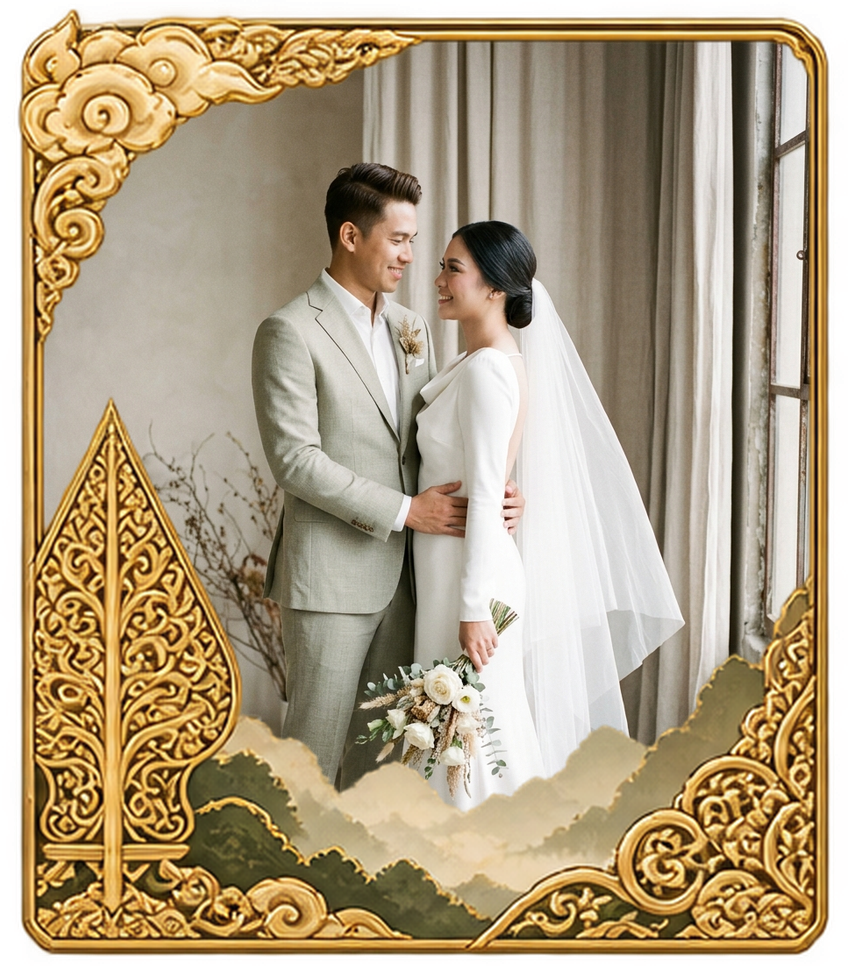
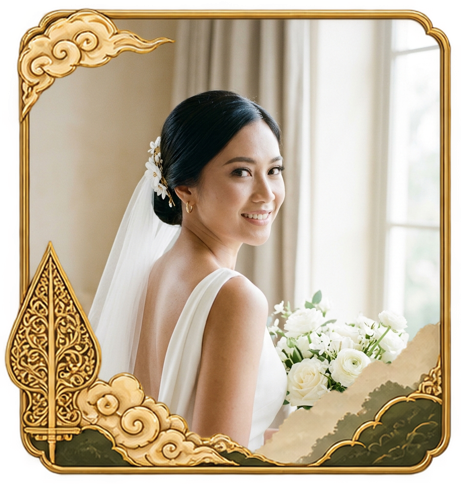
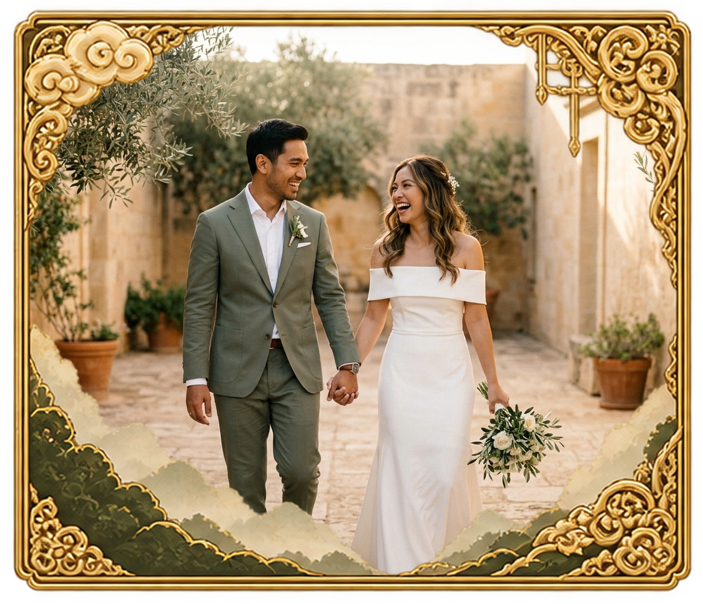
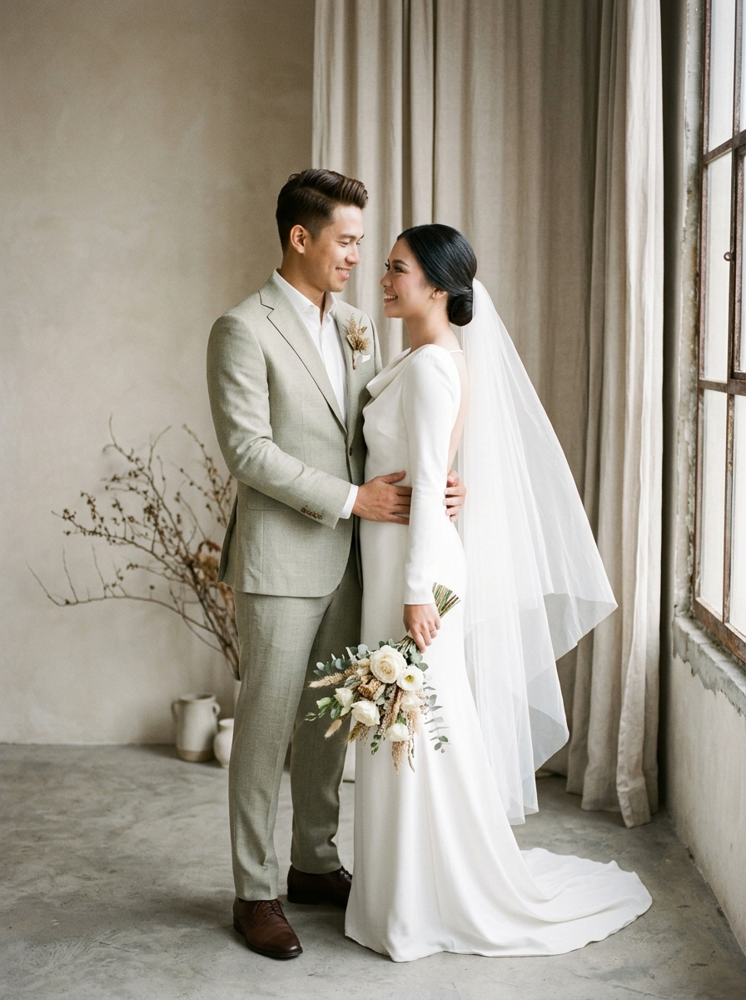
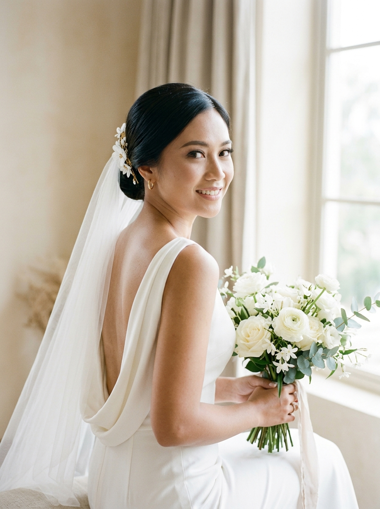
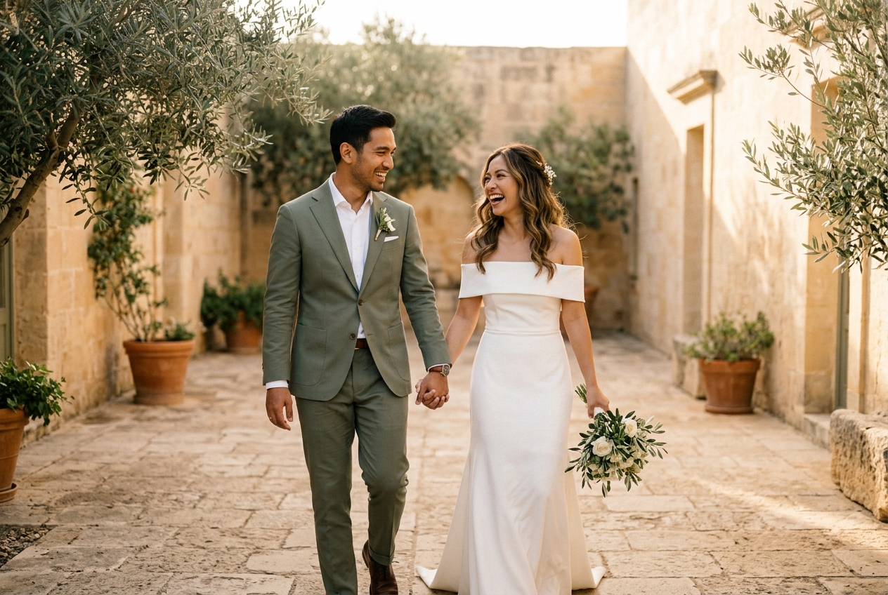

Raka & Sinta
Sabtu, 24 Mei 2025 • Surakarta, Jawa Tengah
“Hangat dalam kesederhanaan, menyatu bagai embun pagi di lembah kedamaian.”
بِسْمِ اللَّهِ الرَّحْمَٰنِ الرَّحِيمِ
“Dan di antara tanda-tanda (kebesaran)-Nya ialah Dia menciptakan pasangan-pasangan untukmu dari jenismu sendiri, agar kamu cenderung dan merasa tenteram kepadanya, dan Dia menjadikan di antaramu rasa kasih dan sayang. Sungguh, pada yang demikian itu benar-benar terdapat tanda-tanda bagi kaum yang berpikir.”
Mempelai Bahagia
Dengan memohon rahmat dan ridho Allah SWT, kami bermaksud menyelenggarakan syukuran pernikahan putra-putri kami:
Raden Mas Raka Pradana, S.T.
Putra pertama dari pasangan
Bpk. Bambang Susilo & Ibu Sri Wahyuni

Raden Ajeng Sinta Larasati, S.E.
Putri kedua dari pasangan
Bpk. Hendro Wibowo & Ibu Tri Mulyani
Kisah Cinta Kami
Awal Kisah di Kota Budaya
Pertemuan hangat yang berawal dari sapaan sederhana menjadi awal mula perkenalan tulus penuh makna di tengah kesibukan kota.
Langkah Menuju Keseriusan
Dengan restu kedua orang tua, Raka secara resmi meminang Sinta dalam suasana kekeluargaan hangat, mengukuhkan tekad melangkah ke pelaminan.
Dua Hati Bersatu Selamanya
Kini tiba saat yang dinanti, kami siap mengikat janji suci pernikahan dan membangun rumah tangga penuh kedamaian dalam ridho Ilahi.

“Cinta bukan menemukan kesempurnaan, melainkan belajar tumbuh bersama dalam ketulusan.”
Hari Bahagia
Sabtu, 24 Mei 2025 • Pukul 08.00 WIB
Akad Nikah
Pendopo Taman Lembah Hijau
Surakarta • Jawa Tengah
Jl. Slamet Riyadi No. 128, Surakarta
Resepsi Pernikahan
Pendopo Taman Lembah Hijau
Surakarta • Jawa Tengah
Jl. Slamet Riyadi No. 128, Surakarta
Galeri Bahagia
Potret kenangan penuh kehangatan dalam nuansa rustic natural

Raka & Sinta

Sang Putri
Sang Putra

Langkah Seiring Sepanjang Waktu
Amplop Digital
Doa restu Anda merupakan karunia terindah bagi kami. Namun jika Anda bermaksud memberikan tanda kasih, dapat melalui:
Nomor Rekening
Nomor Rekening
Alamat Pengiriman Kado
Kediaman MempelaiRaka Pradana & Sinta Larasati
Jl. Slamet Riyadi No. 128, Kel. Sriwedari, Kec. Laweyan
Kota Surakarta, Jawa Tengah 57141
No. HP: 0812-3456-7890
Ucapan & Doa Restu
Berikan doa restu dan konfirmasi kehadiran Anda
Budi Santoso & Keluarga
1 jam yang laluSelamat menempuh hidup baru Raka & Sinta! Semoga menjadi keluarga yang sakinah, mawaddah, warahmah. Aamiin ya Rabbal Alamin.
Anindya Putri
3 jam yang laluBarakallahu lakum wa baraka alaikum wa jama'a bainakuma fii khair. Turut berbahagia untuk kalian berdua!